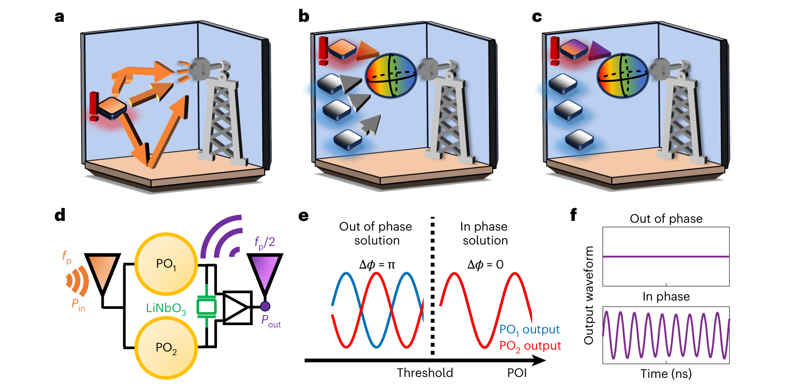
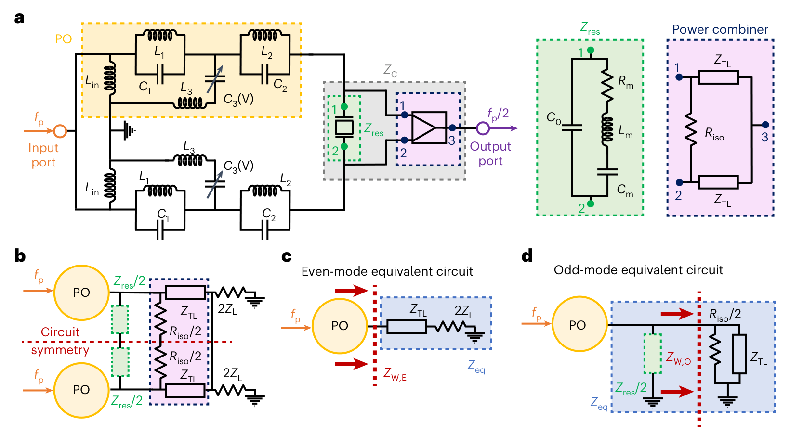
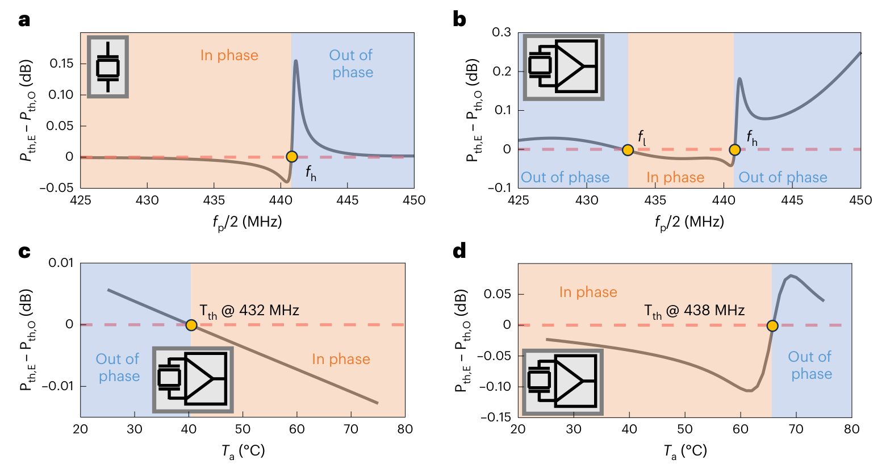
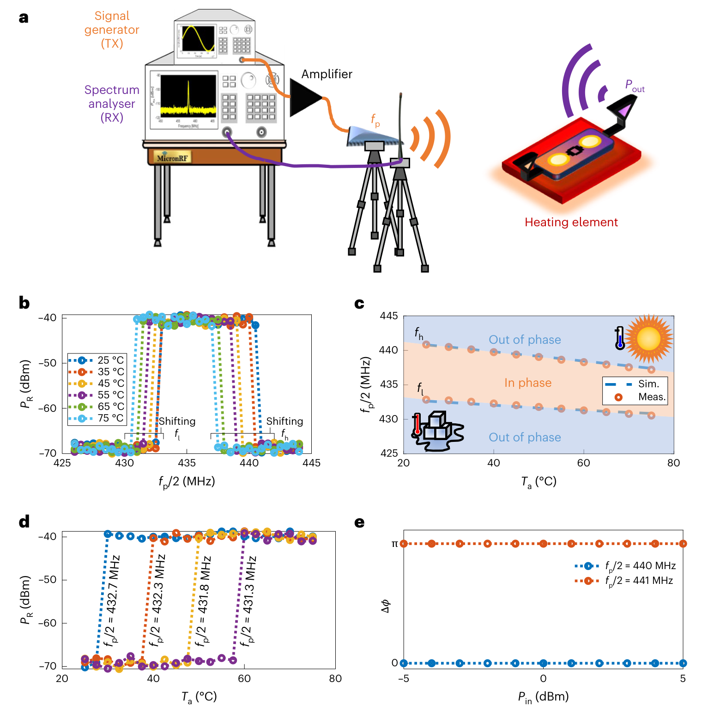
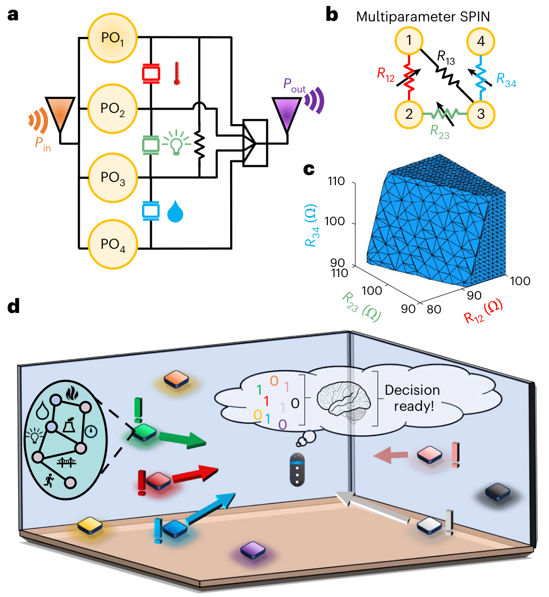

让无电池标签 自己判断温度越界
SPIN 用温度敏感的铌酸锂谐振器耦合两个射频参数振荡器，让它们在“反相抵消”和“同相增强”之间切换。读写端改变询问频率，就能调整报警温度。新意在于把阈值判断写进器件的耦合动力学。
将模拟感知
压成一个事件
作者让一个由射频供能的标签，在本地通过两路振荡器的相位同步状态判断温度是否越界，并用半频强信号报告结果。理解这篇论文，只需抓住“温度 → 耦合阻抗 → 模式竞争 → 相加/抵消”四步。
阅读范围：用户提供的 8 页正式论文全部主图（图 1–5），并核对官方补充材料的实验设置、器件加载和失配分析。原文页码下文指印刷页码。图像取自所提供 PDF；原始 PDF 保留在本地。实测、模型推导与本页研究建议分别标注。

把“温度越界”变成两路射频信号的相加或抵消
先建立完整因果链：被测量改变耦合阻抗，阻抗选择相对相位，合路器把相位关系变成强弱输出。
为什么传感器能选择相位：偶模与奇模看到不同负载
这是机制解释的核心。把对称双振荡器拆成两种候选模式，就能比较哪一种模式更容易起振。

原图保留子图、坐标和图例，移除出版社长图注。
可编程阈值来自两条随温度移动的频率边界
所有曲线都是数值结果。先读纵轴正负，再看零交叉：纵轴不是输出功率，而是偶模与奇模起振功率门槛之差。

原图保留子图、坐标和图例，移除出版社长图注。
最强实验：同一块标签无线改写 30–60°C 报警阈值
这一图把器件做出来后的无线测量，与输入功率扰动的有线验证放在一起。读数时必须分清接收功率 Pᵣ、标签输入功率 Pᵢₙ 和发射端功率。

原图保留子图、坐标和图例，移除出版社长图注。
从单阈值走向多参数判别，证据仍停留在模型
四个振荡器把三个传感阻抗映射成一个联合判别区域，这是可迁移的研究方向，也是全文最应控制措辞的部分。

原图保留子图、坐标和图例，移除出版社长图注。
把两种“阈值”分开，全文就容易读懂
功率阈值 Pth：入射能量足够，参数振荡器才能产生半频输出。感知阈值 Tth：温度改变两种耦合模式的相对优势，使输出由抵消转为增强。论文的设计让后者主要由耦合与频率决定；前者仍然是系统工作前提。
D < 0 → 偶模优先 → Δφ ≈ 0 → 强输出
D > 0 → 奇模优先 → Δφ ≈ π → 弱输出这是根据正文模式竞争分析整理的判读式；以 dBm 门槛相减时差值单位为 dB。零交叉附近如何切换、是否受噪声和历史影响，需要额外动态实验。
读写器无须精确反演温度；它在 fₚ/2 频带检测显著信号。与此同时，它仍需有足够的接收灵敏度。标签内部决策不易被幅度扰动改变，不等于无线信号无法被遮挡或衰落淹没。
相位为何能表示一个比特
参数振荡器在周期加倍状态下具有相差 π 的相位选择，可用 σᵢ = ±1 表示。对两个振荡器，最有用的是它们的相对符号：相同相位像铁磁同向，不同相位像反铁磁反向。这里的“自旋”是经典振荡相位的映射，实验没有使用量子自旋或证明量子计算能力。
= A₁² + A₂² + 2A₁A₂ cos Δφ本页用于解释合路的简化关系，省略匹配、损耗和比例系数。等幅时相位为 π 可理想抵消；不等幅时仍有 (A₁ − A₂)² 残余。不能由“幅度翻倍”推出无源器件凭空增加能量。
“编程”实际改变了什么
温度升高时，LiNbO₃ 谐振器的谐振频率下降，相关模式边界随之移动。读写端选择不同 fₚ，便选择不同的边界交点 Tth。这里没有把数字阈值写进非易失存储器；阈值配置依赖正在使用的询问频率和器件标定。
两条边界意味着强输出对应一个温度相关的频率窗口。只在选定工作区间内，才可以把其中一条边界理解为单向高温或低温报警。本文未展示越界后永久保持的事件记忆，不能替代冷链历史记录器。
实验频率表：图轴上的数值必须乘二
| 图 4d 半频 fₚ/2 | 实际询问频率 fₚ | 升温触发阈值 | 证据条件 |
|---|---|---|---|
| 432.7 MHz | 865.4 MHz | 约 30°C | 同一原型，1 m 无线链路；加热台 25–75°C；四条曲线测的是接收端 Pᵣ。 |
| 432.3 MHz | 864.6 MHz | 约 40°C | |
| 431.8 MHz | 863.6 MHz | 约 50°C | |
| 431.3 MHz | 862.6 MHz | 约 60°C |
阈值与半频来自正文 p. 533 和图 4d；询问频率由本页乘二换算。图 3c、d 是另一组仿真频点，勿混用。
创新定位：改变判断发生的位置与依据
| 对照思路 | 越界如何判断 | 本文改变了什么 |
|---|---|---|
| 线性无源标签 | 被测量调制散射，读写端从幅度或相位估计状态。 | 把阈值判断移入耦合电路，减少对绝对模拟读数的依赖。 |
| 以非线性启动作为报警的标签 | 参数变化触发振荡分岔，但输入功率变化也会影响启动。 | 在可起振的前提下，用模式选择而非单纯“开始振荡”报告越界。 |
| 已有振荡器 Ising 系统 | 通过节点耦合构造动力学状态或优化任务。 | 将参数敏感的色散耦合、半频无线读出和频率选阈值连为传感单元。 |
这是按作者问题设定和正文所引相关工作做的机制比较，未进行独立全领域优先权审计。应把贡献落在具体传感架构与实验上，不能从开篇 Ising 背景推导出本器件比数字系统更快、更省总能量或能解决任意复杂问题。
哪些已证明，哪些还需要补实验
| 论文主张 | 已提供的证据 | 仍不能直接推出 |
|---|---|---|
| 无线可编程温度阈值 | 图 4b–d：测量窗口、频率—温度标定、四个设定阈值。 | 尚无跨器件批次的误差分布、升降温迟滞、长期漂移与连续运行可靠性。 |
| 抵抗输入功率变化 | 图 4e：室温、两频点、−5 至 +5 dBm 有线扫功率，Δφ 不变。 | 不能推广到输入低于 Pth、临界点任意扰动、快速衰落或任意空间多径条件。 |
| 输出对多径更稳健 | 用强信号存在性编码，降低对精确幅度/相位反演的依赖；图 4b、d 有明显强弱差。 | 链路深衰落仍会使强信号低于接收门槛；尚无多径场景误报率、漏报率、ROC 或信道统计。 |
| 降低多标签同址干扰 | 反相相消机制让未越界标签维持弱输出。 | 缺少密集阵列实验；多个报警节点的碰撞、互耦、近远效应和身份识别未由图 1c 解决。 |
| 无源且低开销 | 标签依靠询问射频驱动，无需板载电池；本地输出事件状态。 | 没有整套读写系统能耗对照；30 dBm EIRP、标签输入功率、启动功率和接收功率必须分别报告。 |
| 可实现多参数融合与决策 | 图 5 的四节点耦合图与数值判别区域。 | 真实多物理量标定、串扰、硬件规模化及端到端任务性能尚未由本图验证。 |
| 快速响应 | 动力学机制可随状态改变输出，频域曲线展示稳态切换。 | 未给出统一定义的事件响应时间。射频振荡周期不等于热传感延迟、锁相建立时间或无线报警时延。 |
补充材料校核：影响复现的五点
供能：SI VII 明确 30 dBm 为 EIRP，并逐次从低功率升至终值。端接：测相位的有线装置移除了合路器。加载：裸谐振器 438.46 MHz，装板后约偏移 3 MHz。失配：SI IX 的 2% 元件失谐使阈值约偏 1.5°C，为仿真。逻辑：SI VIII 的逻辑门仍为数值示例。见 官方补充材料 V、VII–IX。
因此，复现时应记录上电/扫功率顺序、实际端接与装板后标定。失配仿真不能替代实物重复性，逻辑示例不能替代多参数硬件。以上补充核对用于限定正文结论。
原文有一处频率口径要核实
正文 p. 533 在单 PO 起振门槛表征段写信号源扫 428–448 MHz，同时称输出为 fₚ/2；但整机实验的泵浦在 852–888 MHz，主要图轴都标成 fₚ/2。该段可能把半频范围写成了信号源频率。
可保留作者报告的 Pth 约 −7 至 −5 dBm，但搭建测试前应对照原始数据确认频率定义，不能照这一个段落直接将泵浦频率减半。
临界点值得单独研究
图 3c 两种模式的门槛差只有百分之几 dB 的量级，恰在交点处两种模式几乎打平。这不自动意味着系统不稳定，却说明需要问：噪声、元件失配和扫参历史是否改变选态概率？
本文的稳定相位测试选在固定频率和室温；更直接的检验是在 Tth 附近重复升降温与上电，绘制“温度—输入功率—触发概率”地图。本页建议，非作者已完成结果。
对无源射频与仿生无人机感知，最值得借鉴什么
把需要发送的信息先压缩成任务事件。如果目标只是判断某状态是否越界，标签端物理比较可以减少原始波形上报；但若目标是精确定位、状态重建或事后诊断，一个报警位不能替代连续信息。对飞行状态感知，可考虑“轻量越界通道 + 保留必要原始数据”的层次设计，收益要用同一任务下的漏报、时延和总能耗衡量。
分别评价判别器和无线链路。在射频定位或运动实验中，应独立统计本地状态判断错误与无线接收失败。移动、天线朝向和遮挡会改变入射功率，即便判别边界对功率较稳，跌破启动门槛依然会表现为无响应；无响应也可能只是标签正常，系统需要可辨别这两种情形的机制。
将耦合权重作为传感变量，是可探索的方法。原理上可以把其他物理量转换成谐振器阻抗变化，但必须重做器件灵敏度、交叉敏感、模式竞争与供能设计。本文未测试扑翼运动、摩擦电驱动或 TDOA，不能直接宣称可移植到这些系统。
最值得补的三组实验
- 判别稳定性：在每个 Tth 周围做双向温扫、重复上电和慢/快功率扰动，分别报偏差、迟滞、触发概率与延迟。
- 真实信道：在移动反射体、遮挡和不同距离下测试，把“低于启动门槛”和“已触发但未收到”分开计数。
- 多节点扩展：正常与异常标签混合部署，逐步增加同时报警数；量化残余输出、互耦、碰撞和读写器识别能力。
三组建议围绕现有证据缺口，不预设系统必然失效。
如果要从零复现
先复现单 PO 的泵浦—半频关系和启动门槛；再测装板后的谐振器阻抗—温度曲线；然后加入第二 PO 与合路器，建立 fₗ、fₕ 标定；最后把有线端口换成无线链路。每一步都保留实际阻抗、输入功率口径与扫参顺序。
最先要向作者索取的是原始门槛数据、温扫步进与稳定等待时间、重复测量数据及完整装配参数。正文数据声明为合理请求后提供，本次未获得原始数据，也未进行电路数值复现。
三分钟组会讲述稿
这篇 Nature Electronics 论文问的是：一个没有电池、信号处理能力很弱的标签，能否自己知道温度越界，而不是把模拟读数交给读写器再算？传统无线读数会混入多径带来的幅度和相位变化；多个正常标签也一起回传，会增加干扰。
作者的办法是用两个参数振荡器模拟一对 Ising 自旋。入射射频给它们供能，二者在半频处振荡，中间用温度敏感的铌酸锂谐振器耦合。温度改变耦合阻抗，让同相模式或反相模式更容易建立。两路输出经过合路器：反相时抵消，同相时增强，所以越界信息变成了一个易于检测的强信号。
最关键的是图 4：在一米无线实验里，改变询问频率，可以让同一块标签分别在约 30、40、50、60°C 触发。另一个有线实验把输入功率扫过十倍范围，两个测试频点的相位状态没有变化，说明判断机制对输入幅度扰动有鲁棒性。
这篇的价值是把感知和一个简单决策放进了物理耦合过程。边界也要说清：它仍需足够的射频能量，图 4e 不是完整的多径场景试验；多参数融合主要是模型展示。值得继续研究的，是临界点附近的重复性、真实无线链路的漏报，以及多个节点同时报警时会发生什么。
术语速查
感知参数 Ising 节点（sensing parametric Ising node），本文的无源阈值传感架构。
通过周期调制电路参数获得增益；本文从泵浦 fₚ 产生 fₚ/2 振荡。
用相差 π 的两类振荡相位表示 ±1；这里是经典电路状态。
两路输出同相 / 反相，对应不同等效负载和起振门槛。
随频率改变的复阻抗；温度移动谐振峰，改变固定频率下的阻抗。
铌酸锂微机电谐振器，将机械振动与电响应连接，作为温度敏感耦合元件。
频率温度系数。正文 −165 ppm/°C 表示升温 1°C 时谐振频率相对下降约 0.0165%。
利用传输线和隔离电阻合成两路射频输出；本文同时参与模式选择。
启动振荡所需的功率门槛 / 被测温度的越界阈值，不能混为一谈。
dBm 是相对 1 mW 的功率绝对标度；dB 是比值。30 dBm 对应 1 W，10 dB 对应十倍功率比。
等效全向辐射功率，计入发射天线方向性；不等于标签实际收到或消耗的功率。
前者是同一信号沿多条路径叠加，后者是附近多设备信号混入接收，需分别验证。